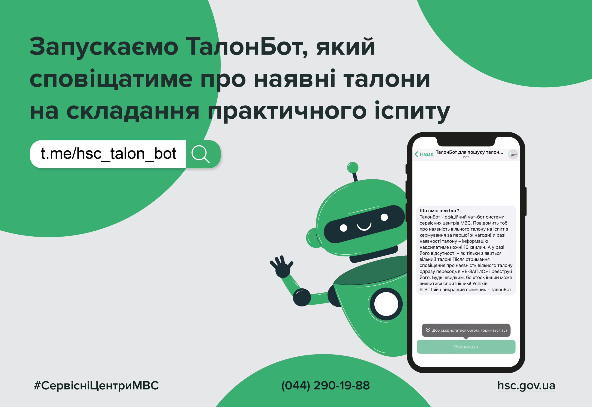

Майже 50% майбутніх водіїв, які самостійно готуються до здачі «теорії», у Житомирській області складають іспит з першого разу
Самопідготовка до «теорії»: майже 50 % майбутніх водіїв на Житомирщині складають іспит з першого разу.Про це 26 січня повідомляє регіональний сервісний центр ГСЦ МВС у Житомирській області.
«З 22 листопада минулого року майбутні водії отримали можливість складати теоретичний іспит без обов’язкового навчання в автошколі. За два місяці в сервісні центри МВС Житомирської області для першої спроби звернулися 188 кандидатів у водії. Раніше для отримання посвідчення водія вивчення правил дорожнього руху в акредитованому навчальному закладі було обов’язковим. Без відповідного свідоцтва кандидат у водії просто не допускався до іспиту в сервісному центрі МВС. Однак з 22 листопада 2023 року українці отримали вибір: або самостійно готуватись до теоретичного іспиту, або опанувати навчання в автошколі», - йдеться в повідомленні.

Про це 26 січня повідомила пресслужба регіонального сервісного центру ГСЦ МВС в Житомирській області.
«Втілюємо інноваційні рішення, які роблять державні послуги ще більш зручнішими. Сервісні центри МВС успішно тримають курс на створення цифрової держави у смартфоні. Вже зараз громадянам доступні онлайн талони на послуги сервісних центрів МВС. Одна з найпопулярніших – складання практичного іспиту. Тепер отримати талон майбутнім кермувальникам стане ще простіше», - йдеться у повідомленні.
Відсьогодні Головний сервісний центр МВС запускає офіційний чат-бот у телеграмі – ТалонБот. Він створений для пошуку вільних талонів на складання практичного іспиту. У разі наявності система автоматично надсилатиме повідомлення кожні 10 хвилин в телеграм. Після отримання сповіщення про наявність вільного талона потрібно перейти за посиланням в Е-Запис та взяти талон на отримання послуги.
Для майбутніх водіїв Житомирської області доступний чат-бот з талонами на теоретичний або практичний іспити
Сервісний центр МВС запустив чат-бот з талонами для охочих скласти теоретичний або практичний іспити.Про це 26 січня повідомила пресслужба регіонального сервісного центру ГСЦ МВС в Житомирській області.
«Втілюємо інноваційні рішення, які роблять державні послуги ще більш зручнішими. Сервісні центри МВС успішно тримають курс на створення цифрової держави у смартфоні. Вже зараз громадянам доступні онлайн талони на послуги сервісних центрів МВС. Одна з найпопулярніших – складання практичного іспиту. Тепер отримати талон майбутнім кермувальникам стане ще простіше», - йдеться у повідомленні.
Відсьогодні Головний сервісний центр МВС запускає офіційний чат-бот у телеграмі – ТалонБот. Він створений для пошуку вільних талонів на складання практичного іспиту. У разі наявності система автоматично надсилатиме повідомлення кожні 10 хвилин в телеграм. Після отримання сповіщення про наявність вільного талона потрібно перейти за посиланням в Е-Запис та взяти талон на отримання послуги.